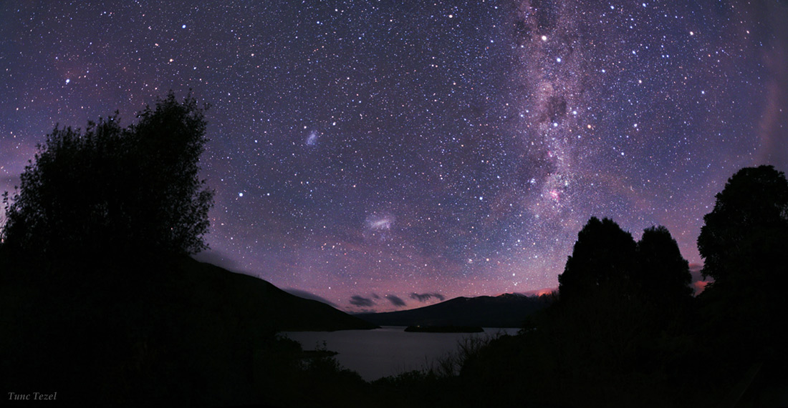

Here is a picture of the type of frog I own. I own a male and female and both get along pretty well. The point is as long as i could walk and talk Ive been in the mud, trees, creeks, and lakes and while i was out there i would catch frogs, toads, Inscets, fish, and Ive even caught birds before. I love being around these kinds of places being able to catch these animals and aprecatice them for what they are and what they do for us humans. I feel like most people dont realize that animals keep us alive. From the Smallest to the largest animal and insects to they to keep us alive. Without them Humans would die.
History has always been my strong-suit, Ive never made less than a 85 in my history classes (expect this year I hate US history). I mean history is so interesting to me you can watch kingdoms rise and fall over thousands of years, and also see so many different faces and how they impacted the world. And one of the ways I get to see history throughout the world is because I'm a certified diver. Ive been on 13 to 14 dives. I have been diving in these country's Mexico, Costa Rica, Aruba, Dominican Republic, and well technically it was Mexican water's but I was in Calf. I also have help my dad work on the truck ill be getting once I get my license. And last I love the shoot my guns, and make fire in the backyard. But I spend most of my time inside but of ps4 and pc. Here are links to my other websites. https://ethanpate.github.io/project-woof1/
Ive always felt like the outside is where humans belong not stuck in some room all day but sadly for most of us we're trappd by cities where the forest has been cut down to make room for houses. Each day I wake up I look up, to the moon to the stars to the billions and billions of planets just waiting for us. To think that where could be life up there on these planets, just think about it all we humans have ever know was are own world and nothing else but once we decice to build the first ships that will cross the stars I just hope that im there to see it.
